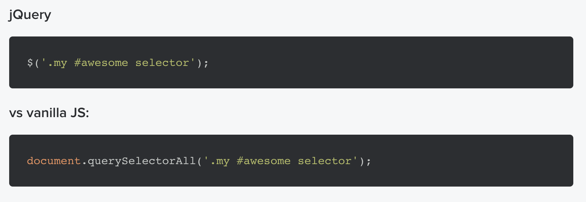
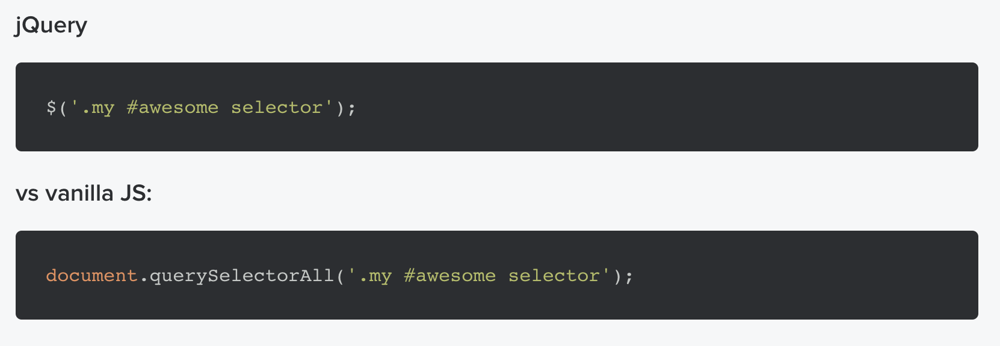

I’m sure I should not be the one to talk, because honestly, I am really new to Javascript. All I know before all this is
that it makes up the holy trinity of web development, along with HTML and CSS, of course. While HTML structures the
content, and CSS is for the styling and design, Javascript takes care of the functionality of the website, makes
anything on it come to life.
Good news for me is that Javascript uses a C style syntax language, something I’m familiar with because of Java. And
that helped me quickly understand Vanilla Javascript.
According to koenpeters from StackOverflow:
“VanillaJS is a name to refer to plain JavaScript without any additional libraries like jQuery. People use it as a
joke to remind other developers that many things can be done nowadays without the need for additional JavaScript
libraries.”
It is said that developers before tended to bypass plain Javascript in order for their code to run smoothly and
consistently across different browsers. But times have changed, and so has ECMAScript spec. It has evolved so much that
developers need not rely on external libraries and frameworks anymore.
Now, I’m not saying that using these external frameworks and libraries is bad. Or that developers need to stay away from
these things. Because these are, in fact, tools necessary to develop advanced web applications. They provide developers
with stable code structures and wide range of cool features. One does not need to bother about cross-browser issues,
security flaws in code, and core functions, etc. because the framework already takes care of all that.
But this technological evolution also is the reason why more and more frameworks come out to the market these past few
years. While browsers and frameworks are always catching up on each other, developers are the ones to suffer. To master
one framework, one has to spend a lot of time practicing it. That’s why it’s hard for developers to keep up, especially
for those who only pretend to fully understand Javascript basics, a.k.a. VanillaJS — the plain Jane of Javascript.
The thing I want to emphasize here is the importance of understanding the fundamentals of Javascript first, before
learning everything else. And that is through their core, VanillaJS. If one has a strong foundation of VanillaJS, it
will then be easier to learn a new framework because the thing you’ll just need to get familiar with is the new syntax.
I know there are a lot of people who would argue that VanillaJS is harder to learn for beginners. It has the connotation
that to use VanillaJS is to “hand code” or “code from scratch” every single thing you build. Plus, that it is not up to
date with web browser technologies.
In response to those arguments, I think it is a lot harder to learn a framework, if one doesn’t know how it works, which
is again, based on VanillaJS. Sure, a framework does magic to the code. But once it also magically starts to not work,
what would one who doesn’t know the basics do? These bugs would be much more challenging to solve with only the
knowledge of a particular framework.
And such argument is irrelevant now, because in the past few years, VanillaJS has been evolving, too. It has borrowed
some conventions from jQuery, and has smoothed out browser compatibility issues that were terrible to deal with years
ago.
In the words of David Kopal from freecodecamp.org,
“The best trade-off is that learning pure JavaScript will give you much more in the long run than investing time in a
particular framework. Frameworks are just shortcuts.”
Trying to understand these concepts under the abstractions brought by the framework is much harder. This makes simple
JavaScript concepts more difficult to understand. Basically, the external frameworks and libraries are just additional
layers of abstraction to the core script.
In this matter, once you master one (VanillaJS), you can then be a jack of all trades (or frameworks) — only if you want
to.